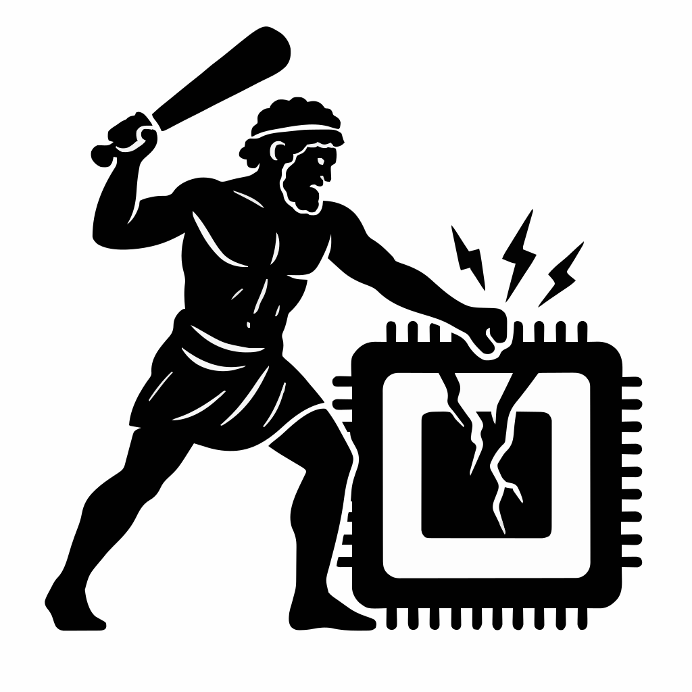

Confidential computing requires hardware support that stops privileged system software from learning secrets of a guest virtual machine. AMD offers such hardware support in the form of SEV-SNP to create confidential virtual machines, such that hardware encrypts all the VM memory. Specifically, SEV-SNP uses the XEX encryption mode such that the same plaintext at different memory addresses yields different ciphertext. Heracles makes three observations: the hypervisor can move encrypted guest pages in DRAM using 3 APIs; when it moves the guest pages to a new DRAM address, pages are re-encrypted; re-encryption is deterministic. By re-encrypting guest data at precisely chosen DRAM locations, we create an oracle allowing us to leak guest memory at block granularity. We build 4 primitives that leverage victims' access patterns to amplify Heracles' impact to not only leak data at block but at byte granularity. In our case studies, we leak kernel memory, crypto keys, and user passwords, as well as demonstrate web session hijacking.
Read the full academic paper for implementation details.